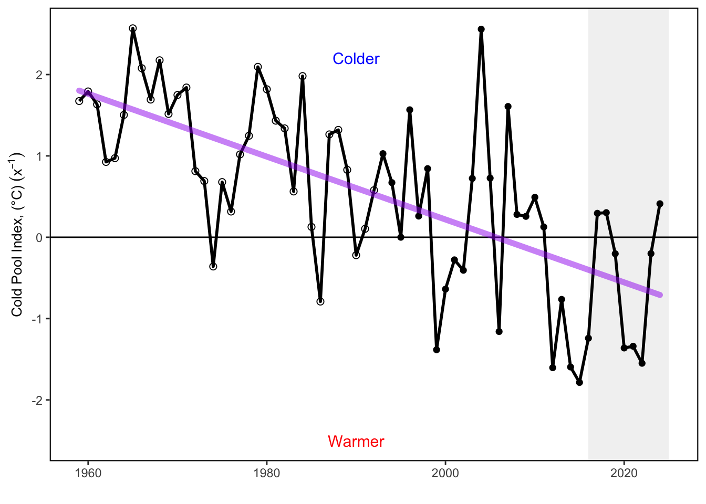
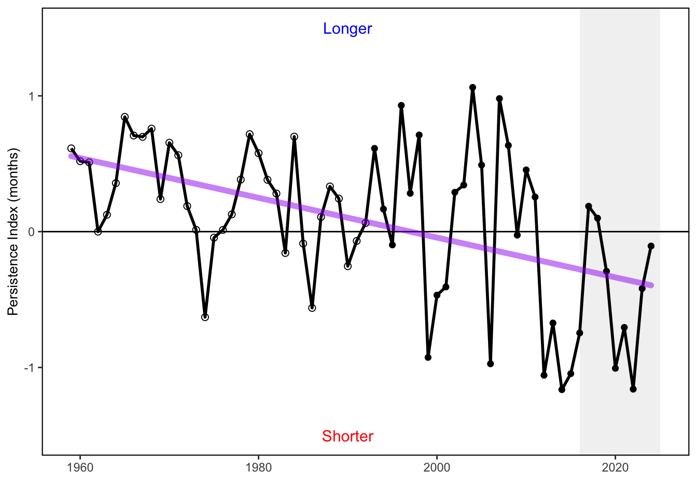
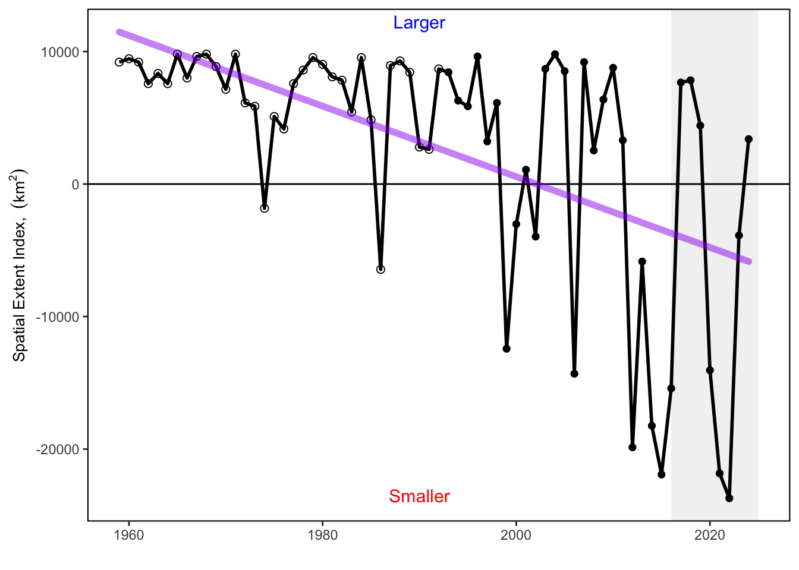

SMART Indicator Report: Cold Pool Index
2 Indicator name
Cold Pool Index
Includes variable(s): cold_pool_index GLORYS, cold_pool_index MOM6, cold_pool_index ROMS, extent_index GLORYS, extent_index ROMS, persistence_index GLORYS, persistence_index ROMS, se_cold_pool_index GLORYS, se_cold_pool_index ROMS, se_extent_index GLORYS, se_extent_index ROMS, se_persistence_index GLORYS, se_persistence_index ROMS
3 Indicator brief description
Three annual cold pool indices (and standard error) for 1959 through 2024
4 Indicator visualization
Time series plots of the three cold pool indices. Cold pool index shows the mean temperature within the cold pool where positive values indicate a warming cold pool. Cold pool extent shows the change in maximum area relative to the historical mean, where negative values indicate a shrinking cold pool. Cold pool persistence measures the duration of the cold pool relative to the historical mean. Negative values indicate a shorter duration. In general the cold pool has been getting warmer, has persisted for a shorter duration, and has covered a smaller footprint since the 1960s.

5 Indicator documentation
5.1 Are indicators available for others to use (data downloadable)?
Yes
5.1.1 Where can indicators be found?
Data: https://noaa-edab.github.io/ecodata/index.html
Description: https://noaa-edab.github.io/catalog/cold_pool.html
Technical documentation: https://noaa-edab.github.io/tech-doc/cold_pool.html
5.1.2 How often are they updated? Are future updates likely?
[need sequential look at datasets for update frequency. Future requires judgement]
5.2 Gather indicator statistics
5.2.1 Units
Indicator | Units |
|---|---|
cold_pool_index GLORYS | no Units field |
cold_pool_index MOM6 | no Units field |
cold_pool_index ROMS | no Units field |
extent_index GLORYS | no Units field |
extent_index ROMS | no Units field |
persistence_index GLORYS | no Units field |
persistence_index ROMS | no Units field |
se_cold_pool_index GLORYS | no Units field |
se_cold_pool_index ROMS | no Units field |
se_extent_index GLORYS | no Units field |
se_extent_index ROMS | no Units field |
se_persistence_index GLORYS | no Units field |
se_persistence_index ROMS | no Units field |
5.2.2 Length of time series, start and end date, periodicity
General overview: annual
Indicator specifics:
Indicator | EPU | StartYear | EndYear | NumYears | MissingYears |
|---|---|---|---|---|---|
cold_pool_index GLORYS | MAB | 1993 | 2024 | 32 | 0 |
cold_pool_index MOM6 | MAB | 1993 | 2019 | 27 | 0 |
cold_pool_index ROMS | MAB | 1959 | 1992 | 34 | 0 |
extent_index GLORYS | MAB | 1993 | 2024 | 32 | 0 |
extent_index ROMS | MAB | 1959 | 1992 | 34 | 0 |
persistence_index GLORYS | MAB | 1993 | 2024 | 32 | 0 |
persistence_index ROMS | MAB | 1959 | 1992 | 34 | 0 |
se_cold_pool_index GLORYS | MAB | 1993 | 2024 | 32 | 0 |
se_cold_pool_index ROMS | MAB | 1959 | 1992 | 34 | 0 |
se_extent_index GLORYS | MAB | 1993 | 2024 | 32 | 0 |
se_extent_index ROMS | MAB | 1959 | 1992 | 34 | 0 |
se_persistence_index GLORYS | MAB | 1993 | 2024 | 32 | 0 |
se_persistence_index ROMS | MAB | 1959 | 1992 | 34 | 0 |
5.2.3 Spatial location, scale and extent
General overview: MAB
Indicator specifics:
Indicator | EPU |
|---|---|
cold_pool_index GLORYS | MAB |
cold_pool_index MOM6 | MAB |
cold_pool_index ROMS | MAB |
extent_index GLORYS | MAB |
extent_index ROMS | MAB |
persistence_index GLORYS | MAB |
persistence_index ROMS | MAB |
se_cold_pool_index GLORYS | MAB |
se_cold_pool_index ROMS | MAB |
se_extent_index GLORYS | MAB |
se_extent_index ROMS | MAB |
se_persistence_index GLORYS | MAB |
se_persistence_index ROMS | MAB |
5.3 Are methods clearly documented to obtain source data and calculate indicators?
Yes
5.3.1 Can the indicator be calculated from current documentation?
The first step was to define the Cold Pool domain, which is typically located within the MAB and the southern flank of Georges Bank (Chen et al. (2018); Houghton et al. (1982); Lentz (2017)). Here, we delineated a spatial domain covering the management area of the SNEMA yellowtail flounder (since this method was initially developed to study the Cold Pool impact on yellowtail flounder recruitment) comprising the MAB and in the SNE shelf between the 20 and 200 m isobaths (Chen et al. (2018); Chen and Curchitser (2020)). We restricted the time period from June (to match the start of the settlement period; SULLIVAN, COWEN, and STEVES (2005)) to September (which is the average end date of the Cold Pool (calendar day 269) estimated by Chen and Curchitser (2020). The Cold Pool domain was defined as the area, wherein average bottom temperature was cooler than 10°C between June and September from 1959 to 2022. We then developed the three Cold Pool indices using bottom temperature from ocean models. The Cold Pool Index (Model_CPI) was adapted from Timothy J. Miller, Hare, and Alade (2016) based on the method developed in Pontavice et al. (2022). Residual temperature was calculated in each grid cell, i, in the Cold Pool domain as the difference between the average bottom temperature at the year y (Ty) and the average bottom temperature over the period 1959–2022 \[({\bar{T}}_{i,\ 1958-2022})\] between June and September. Model_CPI was calculated as the mean residual temperature over the Cold Pool domain such that: \[{{CPI}_y}=\ \frac{\sum_{i=1}^{n}{{(T}_{i,\ y}\ -\ {\bar{T}}_{i,\ 1958-2022})\ }}{n}\] where n is the number of grid cells over the Cold Pool domain. The temporal component of the Cold Pool was calculated using the persistence index (Model_PI). Model_PI measures the duration of the Cold Pool and is estimated using the month when bottom temperature rises above 10C after the Cold Pool is formed each year. We first selected the area over the cold pool domain in which bottom temperature falls below 10C between June and October. We then calculated the “residual month” in each grid cell, i, in the Cold Pool domain as the difference between the month when bottom temperature rises above 10C in year y and the average of those months over the period 1959–2022. Then, Model_PI was calculated as the mean “residual month” over the Cold Pool domain: \[{PI}_y=\ \frac{\sum_{i=1}^{n}{{(Month}_{i,\ y}\ -\ {\bar{Month}}_{i,\ 1958-2022})\ }}{n}\] The spatial component of the Cold Pool and the habitat provided by the cold pool was calculated using the Spatial Extent Index (Model_SEI). The Model_SEI is estimated by the number of cells where bottom temperature remains below 10C for at least 2 months between June and September. The Bottom temperature data is the average ROMS-NWA bottom temperature over the decade \[d\] in the grid cell \[i\]. All above methods Pontavice et al. (2022). Bottom temperature from Glorys reanalysis and Global Ocean Physics Analysis were not being processed. Bottom temperature from ROMS-NWA (used for the period 1959-1992) were bias-corrected. Previous studies that focused on the ROMS-NWA-based Cold Pool highlighted strong and consistent warm bias in bottom temperature of about 1.5C during the stratified seasons over the period of 1958-2007 (Chen et al. (2018); Chen and Curchitser (2020)). In order to bias-correct bottom temperature from ROMS-NWA, we used the monthly climatologies of observed bottom temperature from the Northwest Atlantic Ocean regional climatology (NWARC) over decadal periods from 1955 to 1994. The NWARC provides high resolution (1/10° grids) of quality-controlled in situ ocean temperature based on a large volume of observed temperature data (Seidov, Baranova, Johnson, et al. (2016), Seidov, Baranova, Boyer, et al. (2016)) (https://www.ncei.noaa.gov/products/northwest-atlantic-regional-climatology). The first step was to re-grid the ROMS-NWA to obtain bottom temperature over the same 1/10° grid as the NWARC. Then, a monthly bias was calculated in each grid cell and for each decade (1955–1964, 1965–1974, 1975–1984, 1985–1994) in the MAB and in the SNE shelf: \[{BIAS}_{i,\ d}=\ T_{i,d}^{Climatology}\ -\ {\bar{T}}_{i,\ d}^{ROMS-NWA}\] where \[T_{i,d}^{Climatology}\] is the NWARC bottom temperature in the grid cell i for the decade d and \[{\bar{T}}_{i,\ d}^{ROMS-NWA}\] is the average ROMS-NWA bottom temperature over the decade d in the grid cell i. All above methods Pontavice et al. (2022).
5.4 Are indicator underlying source data linked or easy to find?
Source data are NOT publicly available. Please email hubert.dupontavice@noaa.gov for further information and accessing the ROMS-NWA bottom temperature data.
5.4.1 Where are source data stored?
The three cold pool indices were calculated using a high-resolution long-term bottom temperature product. All the details on the bottom temperature dataset are available in the Bottom Temperature - High Resolution chapter and in “A High-Resolution Ocean Bottom Temperature Product for the Northeast U.S. Continental Shelf Marine Ecosystem” (2023).
5.4.2 How/by whom are source data updated? Are future updates likely?
Joseph Caracappa joseph.caracappa@noaa.gov
[likelihood of source data updates requires judgement, enter by hand]
6 Indicator analysis/testing or history of use
6.1 What decision or advice processes are the indicators currently used in?
The cold pool is seasonal feature in the Mid-Atlantic Bight that is defined by it’s low temperature (< 10 deg C), relative freshness ( < 34 psu), and moderate depth (20 -200m). It is typically present between June and September. Cold pool dynamics can influence the recruitment and settlement of fish species. This indicator set shows the intensity, extent, and persistence of the cold pool each year based on gridded model and reanalysis products. Changes in ocean temperature and circulation alter habitat features such as the seasonal cold pool, a 20–60 m thick band of cold, relatively uniform near-bottom water that persists from spring to fall over the mid and outer shelf of the MAB and southern flank of Georges Bank [75,76]. The cold pool plays an essential role in the structuring of the MAB ecosystem. It is a reservoir of nutrients that feeds phytoplankton productivity, is essential fish spawning and nursery habitat, and affects fish distribution and behavior [75,77]. The average temperature of the cold pool is getting warmer over time [71,78], and the area is getting smaller [79].
6.2 What implications of the indicators are currently listed?
Changes in cold pool indicators can be signs of changes in regional/seasonal oceanographic patterns. This may impact the recruitment and behavior of species dependent on the cold pool. Changes in the cold pool habitat can affect species distribution, recruitment, and migration timing for multiple federally managed species. Southern New England-Mid Atlantic yellowtail flounder recruitment and settlement are related to the strength of the cold pool [78]. The settlement of pre-recruits during the cold pool event represents a bottleneck in yellowtail life history, during which a local and temporary increase in bottom temperature negatively impacts the survival of the settlers. Including the effect of cold pool variations on yellowtail recruitment reduced retrospective patterns and improved the skill of short-term forecasts in a stock assessment model [71,78]. The cold pool also provides habitat for the ocean quahog [79,80]. Growth rates of ocean quahogs in the MAB (southern portion of their range) have increased over the last 200 years whereas little to no change has been documented in the northern portion of their range in southern New England, likely a response to a warming and shrinking cold pool [81].
6.3 Do target, limit, or threshold values already exist for the indicator?
[Fill by hand; if not in key results or implications, likely does not exist]
6.4 Have the indicators been tested to ensure they respond proportionally to a change in the underlying process?
[Fill by hand; if not in introduction, key results, or implications, likely not tested]
7 Comments
[Fill below by hand once above data complete]
7.1 Additional potential links to management in addition to uses listed above
7.2 What additional work would be needed for the Council to use the indicator?
7.3 What issues are caused if there is a gap or delay in data underlying the indicator